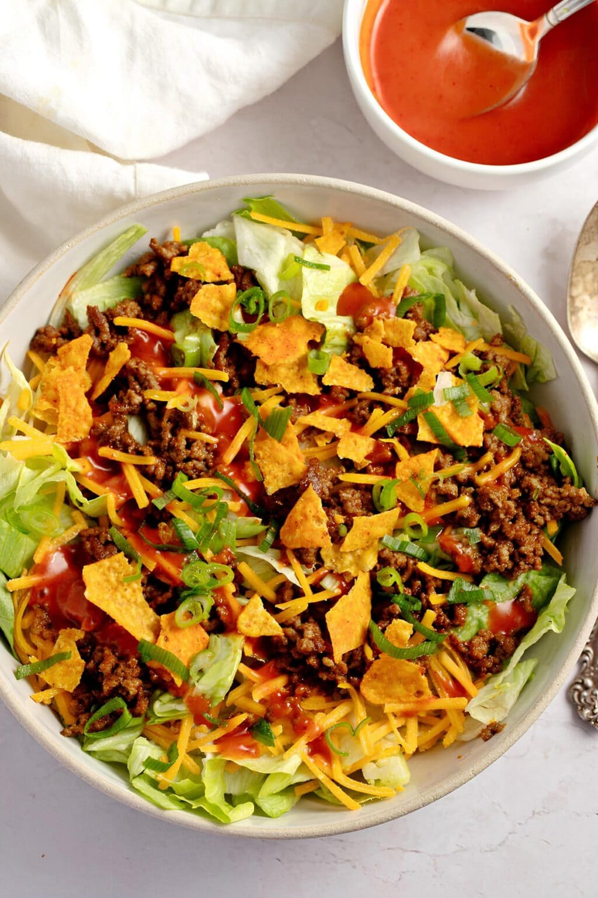

Home
Taco Salad

What is Taco Salad?
Taco Salad is an adventurous blend of a classic Taco Supreme
combined elegently with a crunchy salad. The spice of the taco meat stirs
wonderfully around your taste buds fighting the tanginess of the french dressing
and the sharpness of freshly shredded pepperjack cheese with a smooth finish from the fresh lettuce and sour cream to top it off!
Ingredients
- 1 lb of ground beef
- 1 16oz bag of shredded lettuce
- 1/4 lb of peperjack cheese
- 2 Jalapeno peppers (diced)
- 1 Large yellow onion (diced)
- 1/2 clove of garlic
- 1 packet of taco seasoning (hot or mild)
- 2 cups of tortilla chips or Doritos (smashed)
- 1/4 cup of French dressing
- 4 tbs of butter
- 2 tbs of Taco Bell Fire Sauce
- 2 tbs of chili powder
- 1 tbs ground cumin
- salt and pepper(to taste)
- Worchester sauce (to taste)
Steps:
- Begin melting the butter in a large skillet over medium-high
heat. Mix the ground beef, seasonings, garlic, and onion together in a large bowl.
Once the butter is melted, add the meat to the pan and cook until browned.
-
In a seperate bowl, add your lettuce, jalepenos, cheese, and chips and mix together.
- Once the meat has finished cooking, remove from heat, drain the grease (NOT INTO YOUR SINK!!) and set aside.
-
Now, add the cooked meat mix to the bowl containing your lettuce,
mix in your sour cream, French dressing, and Fire Sauce, and enjoy!